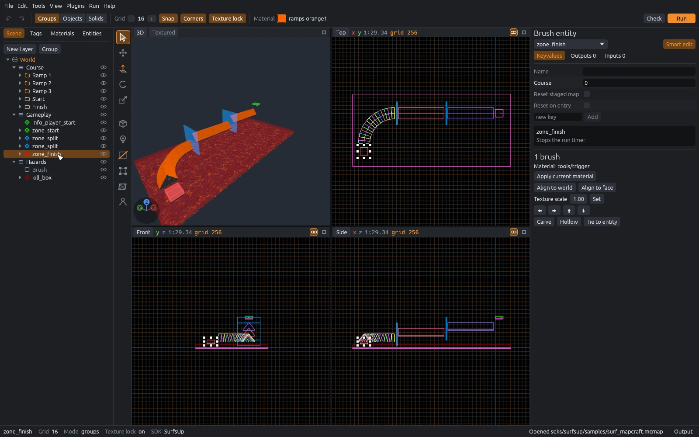

Views
Four views, one scene tree
Top, front, side and a textured 3D view, the way Hammer lays them out. Space maximizes the view under the pointer.
Layers, groups, entities and brushes live in a scene tree you can drag to reorder. The inspector edits whatever you select, with fields and help text from the game's FGD.

